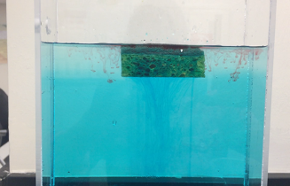

Fun experiments with rotating table
Understanding geophysical flows through turn table experiments. Earth in a box: Effects of stratification and rotation. I had fun conducting all these experiments for our Environmental Fluid lab open house at Colorado State University as a side project during my phd.
Story of two different diffusivities before mixing
Salt fingering is a mixing process, example of double diffusive instability, that occurs when relatively warm, salty water (red) overlies relatively colder, fresher water. It is driven by the fact that heated water diffuses more readily than salty water. We see this process many part ofthe ocean. These experiments are part of curiosity with small science experiments that I love to explore in my spare time. I conducted these fun experiments at Colorado State University.
Dont play with Lasers, but it is fun
Research-cruise experience at BoB